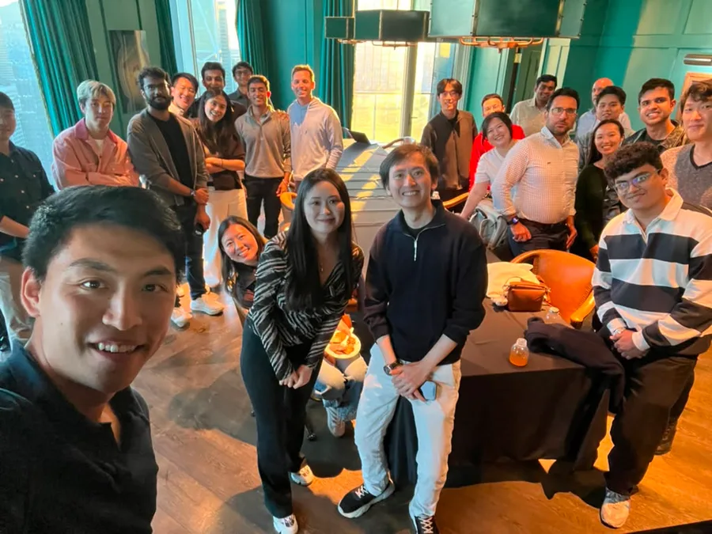
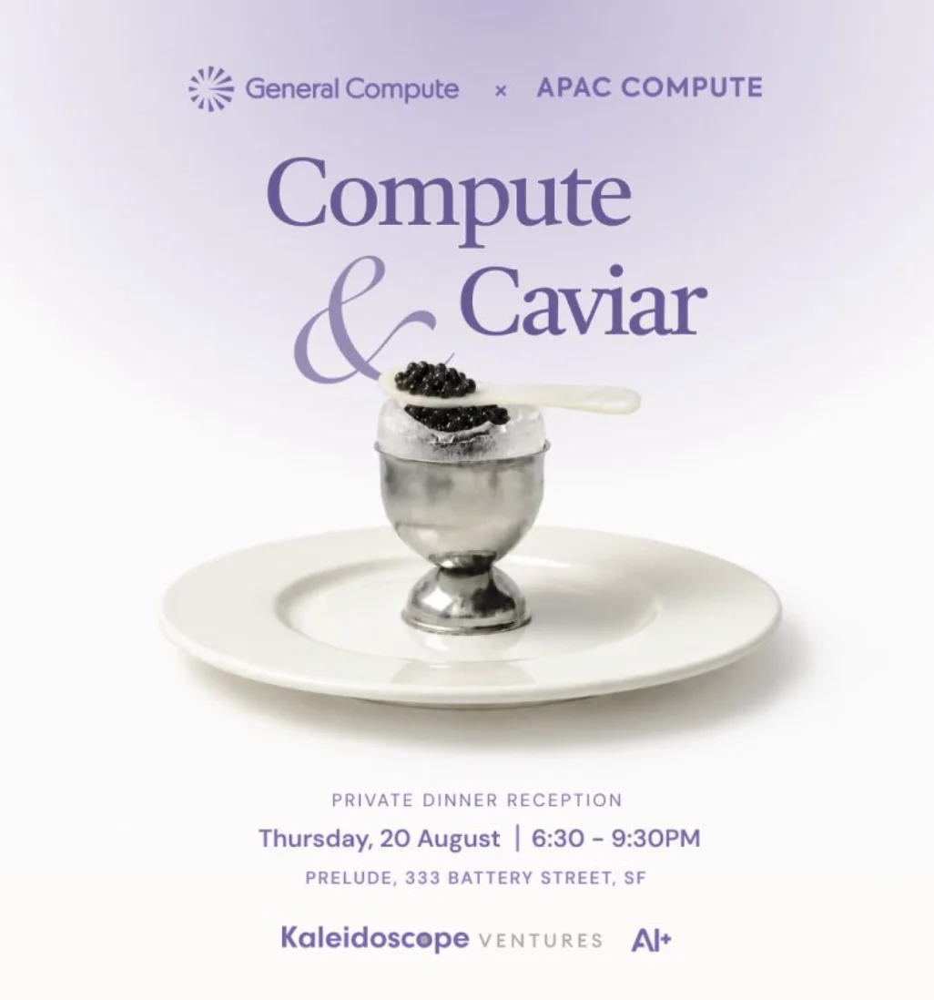
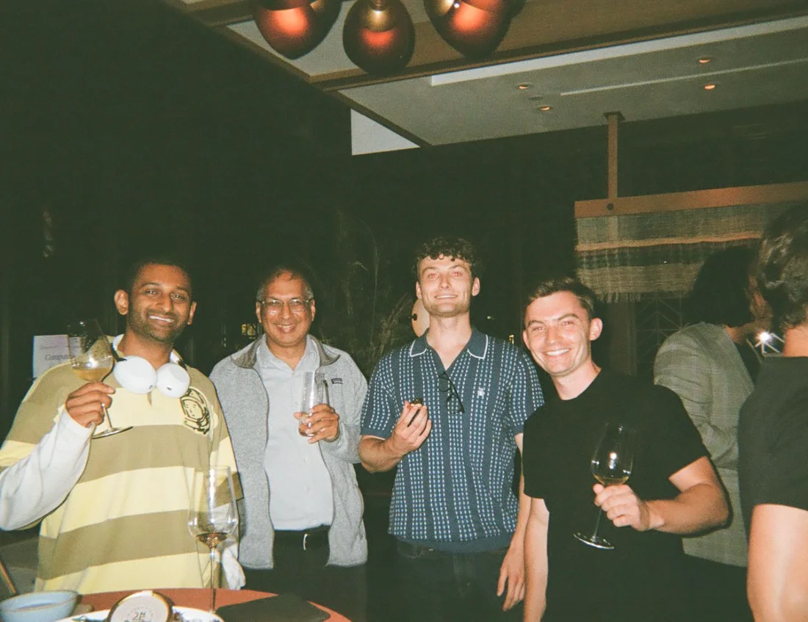
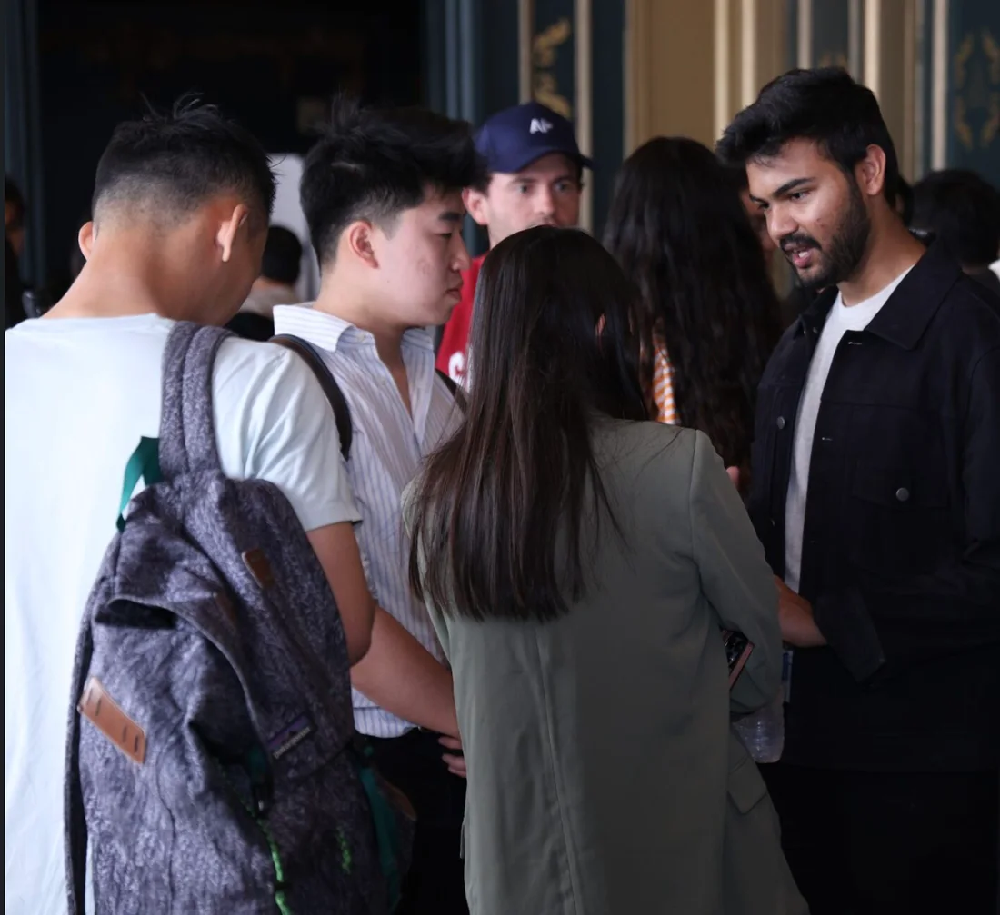
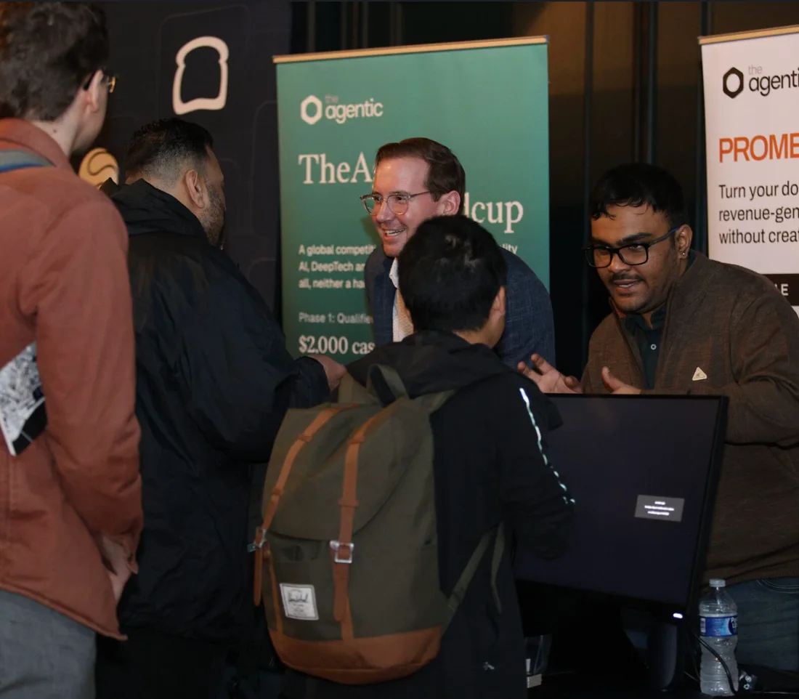

| 01 · GTM Manager |
GTM at
AI+
Feb 2026 – Present
GTM Manager (Apr 2026 – Present) · GTM Consultant (Feb 2026 – Apr 2026)
AI+ is an invite-only community and events platform for AI founders, researchers and investors, in San Francisco and Bengaluru.
I own go-to-market for the full event portfolio across two markets, from positioning and sponsor partnerships to marketing, creative direction and on-site execution.
- 20+ events · 200+ senior attendees
- $250,000+ in sponsorships closed
- 89% of event partners returned for subsequent activations
- 43,000+ Substack subscribers · 54.86% average open rate
| what I did |
01. GTM & Partnerships
- Lead GTM and execution across the event portfolio, covering event positioning, sponsor pitches, partnerships, marketing and on-ground delivery.
- Build and manage relationships with 50+ AI companies, VC firms and technology brands, bringing them on board for co-hosted events, sponsored activations and cross-promotional campaigns.
- Own the end-to-end sponsorship process, from partner research and outreach to proposals, negotiations, deliverable coordination and long-term relationship management.
- Develop partnerships that extend beyond individual events, with 89% of event partners returning for subsequent activations.
02. Events & Experiences
- Have been involved in 20+ events, bringing together 200+ senior attendees across two markets and contributing to over $250,000 in sponsorships.
- Organise and execute 17+ private roundtables across San Francisco, bringing together 500+ founders, AI researchers, marketers and data scientists in curated groups of approximately 30.
- Oversee the event experience end to end, including guest curation, outreach, partnerships, logistics and on-ground execution.
- Work closely with speakers through outreach, coordination, briefings, speaker notes, introductions and key talking points.
03. Brand, Creative & Marketing
- Drive social media and event marketing, from content planning and creation to channel management, event promotion and community engagement.
- Shape the creative direction and visual identity of events, working on themes, merchandise, attendee goodies, speaker kits, signage, branded creatives and other on-ground assets.
- Coordinate partner marketing deliverables, including newsletter placements, event listings, social media promotions, sponsor visibility and community distribution.
04. Content & Community
- Manage and contribute to a 43,000+ subscriber technology newsletter on Substack, writing and publishing weekly content around AI and technology, with a 54.86% average open rate.
- Work on content strategy, audience engagement and distribution to grow the newsletter’s readership and maintain an active technology community.
| in the room |

Compute & Caviar
A very small, private evening in San Francisco for leaders building, financing and operating across the AI infrastructure stack, co-hosted with General Compute and Kaleidoscope Ventures.
In the room: SemiAnalysis, SambaNova, Exa, Artificial Analysis, Composio, Fireworks AI, OpenAI, Nebius, Qualcomm, Etched and Ricursive Intelligence, with investors from Andreessen Horowitz, DCVC, Temasek and Theory Ventures.
A pretty serious room, and an evening that was anything but: caviar, champagne and conversations about inference economics that turned into partnerships, deals and new relationships.
“Was an amazing event!”


